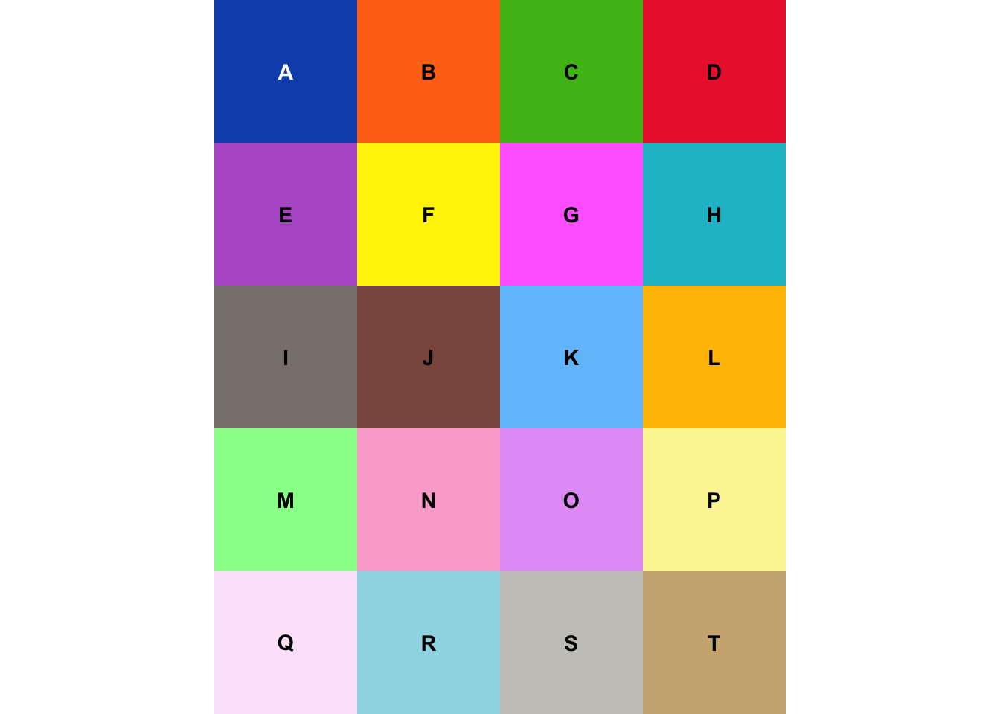

Chapter 5 Visualizations
Minor visualization capabilities exist within the package, mostly for checking the integrity of the imported information. For example, once imported, a color table can be viewed:
 The label.cex argument controls the size of each label as plotted in its square, and the label.font controls whether the label is printed in bold (=2) or regular face (=1). nrows_in_display allows manually setting the number of rows in the visualized table. If not given, this defaults to NULL, which is a flag for the function to pick its own visualized table dimensions.
For labeled data, class maps can be visualized with
NeuroScopeIO::vis_classmap(class_matrix = incl$class, ctab = ctab)
## Warning in as.cimg.array(RGBarray): Assuming third dimension corresponds to
## colourThe argument class_matrix must contain class labels for each pixel (and be in “image” format, i.e., with dimensions = image dimension). This obviously requires import of the include and ctab information.
PE plurality labels of the SOM can be visualized in the same manner by converting the nunr class information back to a cube:
som_labels = NeuroScopeIO::convert_datmat_to_datcub(datmat=nunr$class, img_x = som_x, img_y = som_y)
NeuroScopeIO::vis_classmap(class_matrix = som_labels, ctab = ctab, pixel_expansion_factor = 5)
## Warning in as.cimg.array(RGBarray): Assuming third dimension corresponds to
## colourThe additional argument pixel_expansion_factor enlarges each pixel defined in the class_matrix by its value. This is helpful for visualizing SOM labels, as SOM lattices are typically small (and the resulting plot hard to see).